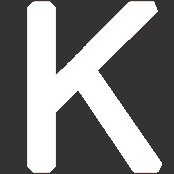

Welcome! I’m Bill Sun, a third-year Engineering Science student at the University of Toronto, majoring in
Machine Learning and Artificial Intelligence. I am enthusiastic about using software, big data, machine learning,
and the engineering approach to solve challenging problems, and helping to improve people's lives through technology.
Beginning in May 2019, I have begun my professional experience year (PEY) co-op
at NuraLogix as a Data Science Software Developer, where my work is centered around developing a Python
API client for simple access of the DeepAffex (DFX) cloud service. I also worked on numerous smaller projects on-board.
In my spare time, I like to workout, play sports, travel, photograph weather and nature, mentor younger peers, and read the news and books.
Skills Summary
Programming
Other Technologies
Engineering & Leadership
Engineering Design Process
Agile Methodology
Software Development Cycle
DevOps
Event Organization
Teamwork
Project Management
Public Speaking

Mentoring
Experience Highlight
Music Genre Classifier
Deep Learning Project
Transit Modelling Research
University of Toronto Transportation Research Institute, Summer 2017
Click the images to view the details for each project.
If you are interested, you can view my résuméhere.
Personal Statement
Why Engineering?
I have been interested in engineering at a young age. I have been fascinated by machines, electronics, and transportation equipment. I also tried to copy my father’s technical drawings for fun. When I was taught visual arts, I learned how to represent and express my ideas in a unique manner. After I moved to Canada in 8th grade, and went through the struggles of being an immigrant, I realized the importance of helping out people in need. Incorporating my strengths in math and sciences, as well as my interest in design and research, I decided to peruse in engineering sciences.
My Missions
As a student engineer with a diverse background, I envision to make a difference in the community, and in the world we live in. Through my various involvements such as Engineers Without Borders, I hope to reach out towards the community and to those in need by applying my engineering and design skills. More importantly, I help younger students develop engineering design skills, so they can continue the task of making change. Doing that, in my opinion, is not only reaching out to these students and to the community, but it is also my mission as a student engineer. I believe that the core value of being an engineer is to improve people’s lives and make a difference in the world.
My Values
In engineering design, I value usability and accessibility since they allows everyone, especially those in need, to use the products with convenience. For usability I value having a proven, functional design over a theoretical and unproven one. As for accessibility, I have witnessed people with deficiencies or disabilities try to use certain things and struggle, so I believe it is important to take consideration of all kinds of people with various needs when it comes to engineering design. In the design process, one of my strengths is making prototypes, both building it and making concept drawings. I also like to develop testing methods to select the best designs, as showcased in my design projects from Praxis I and II. You can read more about my engineering design process here.
Through the next 3 years, I am continuing my development as a professional engineer, and working to improve my design abilities such as creativity in thinking, as well as learning more about the technical aspects of design.
You can also read about my engineering insights and reflections in my blog.